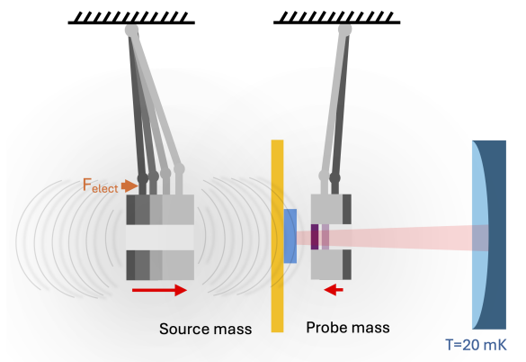

Optomeccanica con dispositivi micro- e nanofabbricati vincolati (clamped)
Optomeccanica di cavità con membrane di nitruro di silicio microfabbricate e specchi micro-oscillanti, progettati per perdite meccaniche e ottiche molto basse. Li usiamo per lo squeezing, le misure al limite quantistico e il sensing quantistico.

Optomeccanica levitata
Nanoparticelle levitate in pinzette ottiche e raffreddate fino al regime quantistico del loro moto. Studiamo i fenomeni quantistici che emergono in questi oggetti mesoscopici attraverso l’interazione con la luce, oltre alle interazioni tra più particelle.

Fondamenti, in collaborazione con l’INFN
Test di fisica fondamentale con oscillatori macroscopici, in collaborazione con l’INFN.
GRAFIQO In corso
Forza gravitazionale in optomeccanica quantistica
Un esperimento per misurare la forza gravitazionale tra oscillatori di massa dell’ordine del milligrammo.
Gruppi INFN: Firenze, Perugia e TIFPA (Trento Institute for Fundamental Physics and Applications).
Altri partner: Università di Firenze, Università di Trento, Università di Camerino, CNR (Consiglio Nazionale delle Ricerche, inclusi INO e IMEM), LENS (Laboratorio Europeo di Spettroscopia Non Lineare), FBK (Fondazione Bruno Kessler) e Delft University of Technology (Paesi Bassi).
HUMOR Concluso
Heisenberg Uncertainty Measured with Opto-mechanical resonators
Una ricerca di effetti alla scala di Planck sulla dinamica di oscillatori macroscopici, che ha posto nuovi limiti sui commutatori deformati.